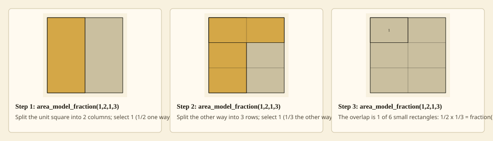
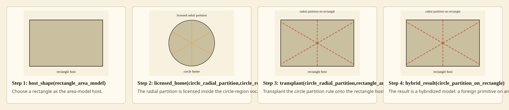

circle partition transplanted onto a rectangle hybridization_transplant

Partition the rectangular area model by its own part-of-part vocabulary.
- Proof
- productive_preserves_denoted_task
- Frames
- 3 (temporal)
- Frame sequence
- 1. area_model_fraction(1,2,1,3)
2. area_model_fraction(1,2,1,3)
3. area_model_fraction(1,2,1,3) - Residue
- human_endorsement_required
- Claim
- Hermes checks representation grammar, denotation, deformation evidence, refusal, and render frames; it does not certify that this generated visual is a faithful reading of any particular student's work.
circle partition transplanted onto a rectangle hybridization_transplant

Move the circle's radial partition rule onto the rectangle host.
- Proof
- misconception_deformation
- Frames
- 4 (temporal)
- Frame sequence
- 1. host_shape(rectangle_area_model)
2. licensed_home(circle_radial_partition,circle_region)
3. transplant(circle_radial_partition,rectangle_area_model)
4. hybrid_result(circle_partition_on_rectangle) - Residue
- human_endorsement_required
- Claim
- Hermes checks representation grammar, denotation, deformation evidence, refusal, and render frames; it does not certify that this generated visual is a faithful reading of any particular student's work.